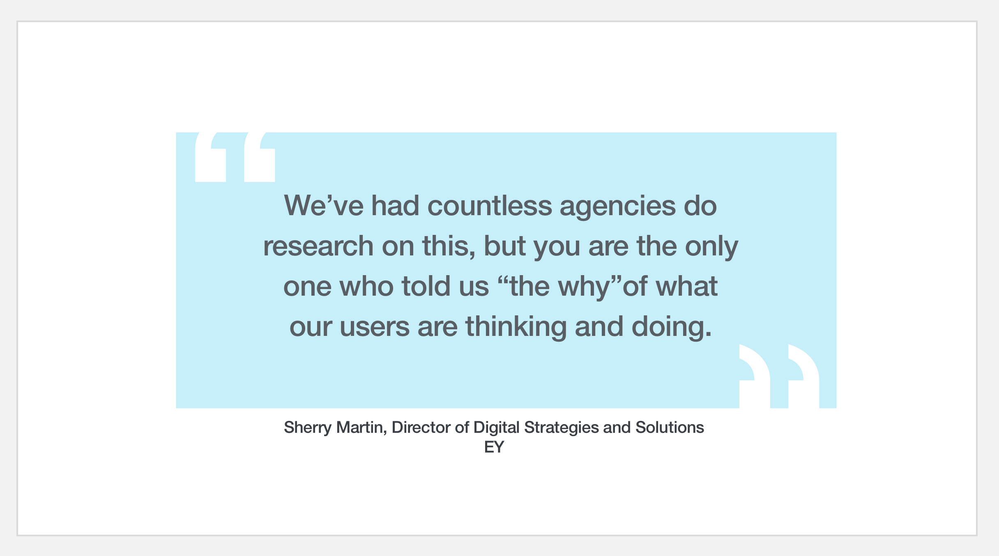
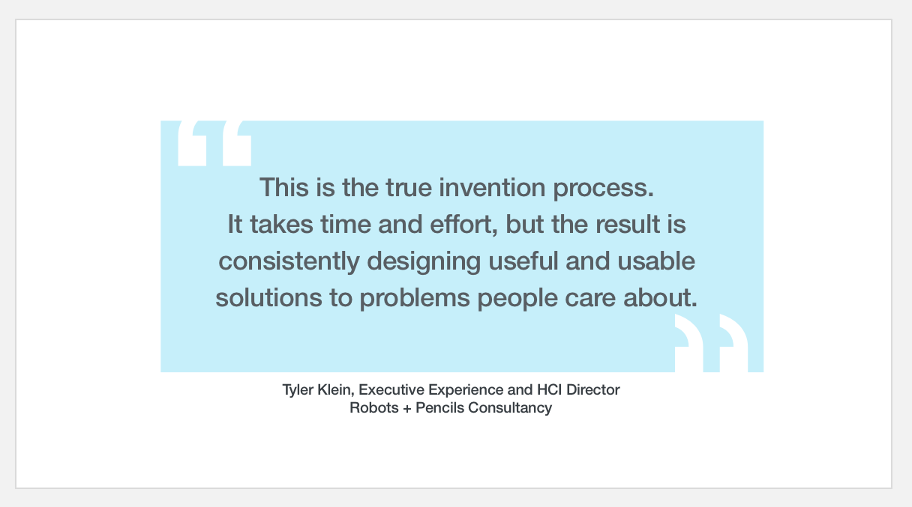

EY
EY Lens Platform
EY (Ernst and Young) is a London-based global "professional services" company with over 350,000 employees. As one of the "Big Four" accounting firms, they provide accounting, assurance (auditing and analysis), and transactional services (e.g., mergers and acquisitions).
Outcomes
- Conducted comprehensive discovery across 20-year-old CRM crisis: led 40+ hours of interviews yielding 1,200+ data points to diagnose why 350,000+ employees avoided legacy Mercury system and newer Lens platform, making sales pipeline identification impossible.
- Exposed fundamental product assumptions: stakeholder-built AI recommendation engine failed concept testing as users found it too simplistic for complex client relationships. Discovery revealed adoption barriers rooted in technical issues (inconsistent metrics, duplicate job codes, lack of syntax standards, 400+ quarterly entity name changes) rather than feature gaps.
- Synthesized cross-team research into actionable insights: independently processed raw notes from multiple researchers when synthesis capacity was limited, identifying that users gained nothing from system engagement while it actively hindered client service. Recommended pivot toward sales culture cultivation and front-line education over feature development.
- Navigated complex stakeholder dynamics: balanced client's push for validation of pre-built solutions with rigorous discovery methodology, working within GDPR constraints and managing executive expectations while maintaining focus on actual user needs versus organizational assumptions.
The Situation
EY directors and strategists aim to develop their clients’ front line business (the businesses they’re directly involved with). EY utilizes an in-house customer relationship management system called 'EY Mercury,' designed to capture client names, contact information, connections, and titles, along with client activity, open jobs, and project details.
However, this system, which is over 20 years old, has become extremely challenging to use. To address this, EY has developed a secondary application called 'EY Lens' that 'sits on top of' the legacy Mercury system. Its purpose is to provide a more user-friendly experience similar to Salesforce, reducing the need for extensive data entry and showcasing potential sales opportunities or 'pipeline opportunities'.
Both Mercury and Lens run on data from the "front line", and that critical data simply isn't there. "Front line" professionals avoid both systems—making identifying new sales opportunities or fact-base company strategies nearly impossible.
Findings
We collected 1200+ data points from more than 40 hours of interviews and discovered a clear misunderstanding existed between the "front line" professionals and the stakeholders. In the middle, was the EY Digital Strategy Team trying to build a useful application.
The EY Digital Strategy Team had banked on the technology and capabilities in their immediate budget and toolkit—creating a business logic-based services recommender engine under the guise of being AI-Assisted that would suggest similar projects, teams, or services for front-line professionals to sell to their clients.
We continually level-set we were on a exploration / discovery, and concept testing their recommendation engine would be a facet of the project.
Ultimately, the EY Digital Strategy Team was disappointed we didn't get any positive responses from concept testing. Users found it too simplistic compared to their complex client relationships.